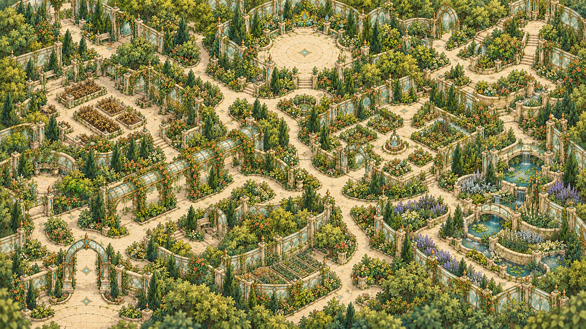

22개 화면을 순서대로 검토합니다. 각 화면의 ‘흐름 보기’를 누르면 해당 장면에서 시작할 수 있습니다.Life: 왼쪽 플레이어 · 오른쪽 NPC · 하단 대화창 / Adventure: 넓은 맵의 일부 · SD · 목표 · 백팩
처음부터 흐름 보기 → · 제작·검수 기록
마이룸 5구도 비교 →

입구 → 회랑 → 조사 화단 → 약초 구역 → 단서 구역 → 룬 중심부. 길과 구역이 서로 이어지는 구조를 확인합니다.